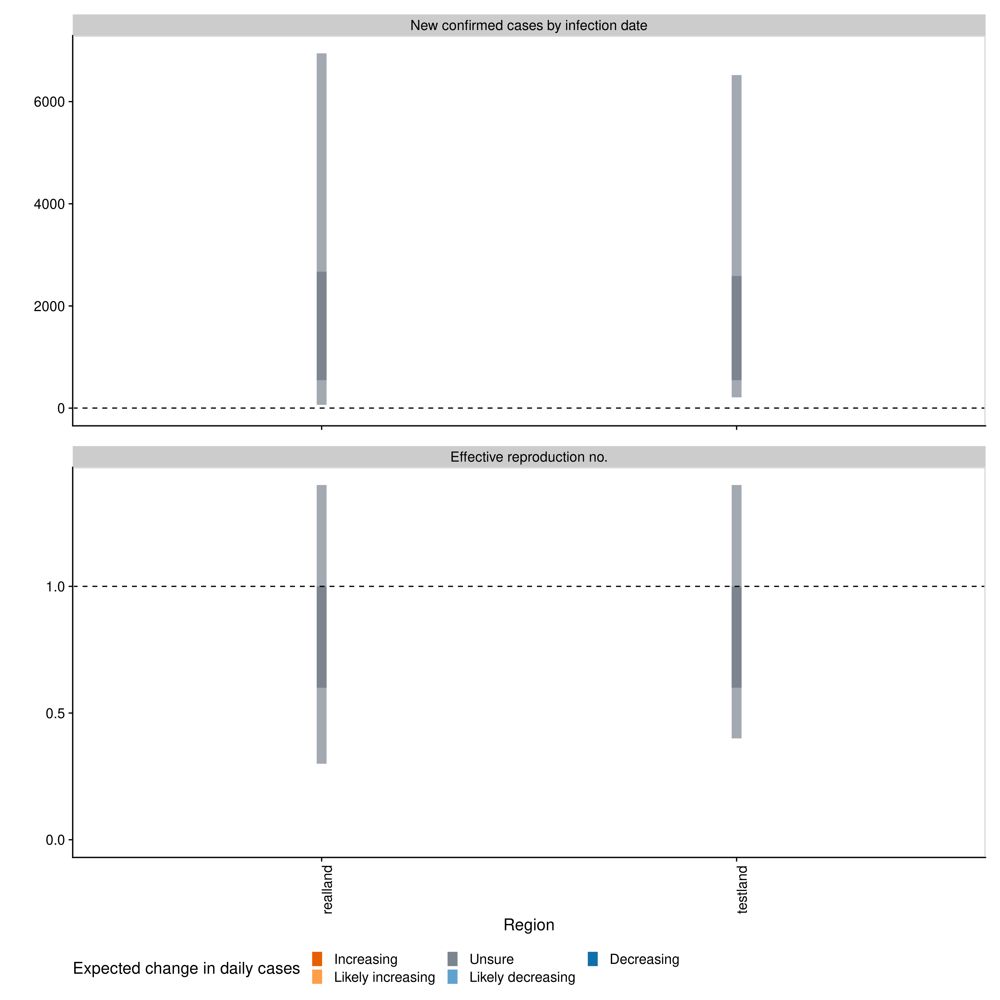

This package is under development.
This package estimates the time-varying reproduction number, rate of spread, and doubling time using a range of open-source tools and current best practices. It aims to help users avoid some of the limitations of naive implementations in a framework that is informed by community feedback and is under active development. It assumes that only limited data is available on cases by date of onset and instead uses cases by date of report. These are then imputed to case counts by date of infection using an uncertain reporting delay and incubation period via a Gaussian process based method. Right truncation of cases is dealt with internally by {EpiNow2}, as is propagating uncertainty from all inputs into the final parameter estimates (helping to mitigate spurious findings). Time-varying estimates of the reproduction number are estimated using a similar approach to that implemented in the {EpiEstim} package by date of infection with a generation time estimate that includes uncertainty and variation over time controlled using a Gaussian process. Time-varying estimates of the rate of growth are derived from the time-varying reproduction estimates and the uncertain generation time. Optionally, the time-varying reproduction number can be forecast forwards in time using an integration with the {EpiSoon} package and converted to a case forecast using the renewal equation. Alternatively, the time-varying reproduction number and cases can be forecast using a Gaussian process. See the methods section of our Covid-19 site for a detailed discussion of the approach.
Installation
Install the stable version of the package using {drat}:
install.packages("drat") drat:::add("epiforecasts") install.packages("EpiNow2")
Install the development version of the package with:
remotes::install_github("epiforecasts/EpiNow2")
Windows users will need a working installation of Rtools in order to build the package from source. See here for a guide to installing Rtools for use with Stan (which is the statistical modeling platform used for the underlying model). For simple deployment/development a prebuilt docker image is also available (see documentation here).
Quick start
{EpiNow} is designed to be used with a single function call or to be used in an ad-hoc fashion via individual function calls. In the following section we give an overview of the simple use case. For more on using each function see the function documentation. The core functions are: epinow, regional_epinow, estimate_infections, and forecast_infections. estimate_infections can be use on its own to infer the underlying infection case curve from reported cases with Rt optionally returned (on by default). Estimating the underyling infection case curve alone is substantially less computationally demanding than also estimating Rt.
Reporting delays, incubation period and generation time
Distributions can either be fitted using package functionality or determined elsewhere and then defined with uncertainty for use in {EpiNow2}. When data is supplied a subsampled bootstrapped lognormal will be fit (to account for uncertainty in the observed data without being biased by changes in incidence).
reporting_delay <- EpiNow2::bootstrapped_dist_fit(rlnorm(100, log(6), 1)) ## Set max allowed delay to 30 days to truncate computation reporting_delay$max <- 30 reporting_delay #> $mean #> [1] 1.412243 #> #> $mean_sd #> [1] 0.1499645 #> #> $sd #> [1] 1.066485 #> #> $sd_sd #> [1] 0.1264387 #> #> $max #> [1] 30
Here we define the incubation period and generation time based on literature estimates for Covid-19 (see here for the code that generates these estimates).
generation_time <- list(mean = EpiNow2::covid_generation_times[1, ]$mean, mean_sd = EpiNow2::covid_generation_times[1, ]$mean_sd, sd = EpiNow2::covid_generation_times[1, ]$sd, sd_sd = EpiNow2::covid_generation_times[1, ]$sd_sd, max = 30) incubation_period <- list(mean = EpiNow2::covid_incubation_period[1, ]$mean, mean_sd = EpiNow2::covid_incubation_period[1, ]$mean_sd, sd = EpiNow2::covid_incubation_period[1, ]$sd, sd_sd = EpiNow2::covid_incubation_period[1, ]$sd_sd, max = 30)
epinow
This function represents the core functionality of the package and includes results reporting, plotting and optional saving. It requires a data frame of cases by date of report and the distributions defined above. An additional forecasting module is supported via EpiSoon and companion packages (see documentation for an example).
Load example case data from {EpiNow2}.
reported_cases <- EpiNow2::example_confirmed[1:50] head(reported_cases) #> date confirm #> 1: 2020-02-22 14 #> 2: 2020-02-23 62 #> 3: 2020-02-24 53 #> 4: 2020-02-25 97 #> 5: 2020-02-26 93 #> 6: 2020-02-27 78
Estimate cases by date of infection, the time-varying reproduction number, the rate of growth and forecast these estimates into the future by 7 days. Summarise the posterior and return a summary table and plots for reporting purposes. If a target_folder is supplied results can be internally saved (with the option to also turn off explicit returning of results). Note that for real use cases more samples and a longer warm up may be needed.
estimates <- EpiNow2::epinow(reported_cases = reported_cases, generation_time = generation_time, incubation_period = incubation_period, reporting_delay = reporting_delay, horizon = 7, samples = 1000, warmup = 200, cores = 4, chains = 4, verbose = TRUE, adapt_delta = 0.95) #> [[1]] #> Stan model 'estimate_infections' does not contain samples. #> #> [[2]] #> Stan model 'estimate_infections' does not contain samples. names(estimates) #> [1] "estimates" "estimated_reported_cases" #> [3] "summary" "plots"
Both summary measures and posterior samples are returned for all parameters in an easily explored format.
estimates$estimates #> $samples #> variable parameter time date sample value strat #> 1: infections imputed_infections 1 2020-02-13 1 3.000000 <NA> #> 2: infections imputed_infections 2 2020-02-14 1 8.000000 <NA> #> 3: infections imputed_infections 3 2020-02-15 1 15.000000 <NA> #> 4: infections imputed_infections 4 2020-02-16 1 23.000000 <NA> #> 5: infections imputed_infections 5 2020-02-17 1 52.000000 <NA> #> --- #> 125062: gt_sd gt_sd NA <NA> 496 3.349294 <NA> #> 125063: gt_sd gt_sd NA <NA> 497 3.125498 <NA> #> 125064: gt_sd gt_sd NA <NA> 498 2.982192 <NA> #> 125065: gt_sd gt_sd NA <NA> 499 3.222913 <NA> #> 125066: gt_sd gt_sd NA <NA> 500 3.087543 <NA> #> type #> 1: estimate #> 2: estimate #> 3: estimate #> 4: estimate #> 5: estimate #> --- #> 125062: <NA> #> 125063: <NA> #> 125064: <NA> #> 125065: <NA> #> 125066: <NA> #> #> $summarised #> date variable strat type bottom top #> 1: 2020-02-22 R <NA> estimate 2.080170 3.081025 #> 2: 2020-02-23 R <NA> estimate 2.143199 2.905762 #> 3: 2020-02-24 R <NA> estimate 2.179430 2.734900 #> 4: 2020-02-25 R <NA> estimate 2.140953 2.581655 #> 5: 2020-02-26 R <NA> estimate 2.103074 2.531589 #> --- #> 312: 2020-04-14 reported_cases <NA> forecast 1193.000000 5825.000000 #> 313: 2020-04-15 reported_cases <NA> forecast 1027.000000 5071.000000 #> 314: 2020-04-16 reported_cases <NA> forecast 1031.000000 5688.000000 #> 315: 2020-04-17 reported_cases <NA> forecast 1050.000000 7226.000000 #> 316: 2020-04-18 reported_cases <NA> forecast 795.000000 6704.000000 #> lower upper median mean sd #> 1: 2.248587 2.640735 2.511794 2.538888 0.3283498 #> 2: 2.293238 2.586494 2.469596 2.486334 0.2376237 #> 3: 2.272625 2.491991 2.415992 2.427609 0.1723544 #> 4: 2.258612 2.432302 2.355863 2.362968 0.1377549 #> 5: 2.180699 2.343227 2.285555 2.293454 0.1307411 #> --- #> 312: 2150.000000 3863.000000 3220.000000 3575.986000 1628.9503652 #> 313: 1479.000000 2984.000000 2684.500000 3019.954000 1695.1303341 #> 314: 1766.000000 3428.000000 2859.500000 3358.774000 2274.8845417 #> 315: 2328.000000 4590.000000 3489.000000 4161.508000 2682.2294263 #> 316: 1414.000000 3247.000000 2836.000000 3871.282000 4764.5249049
Reported cases are returned separately in order to ease reporting of forecasts and model evaluation.
estimates$estimated_reported_cases #> $samples #> sample date cases #> 1: 1 2020-02-16 2 #> 2: 1 2020-02-17 1 #> 3: 1 2020-02-18 4 #> 4: 1 2020-02-19 4 #> 5: 1 2020-02-20 14 #> --- #> 28005: 500 2020-04-07 3849 #> 28006: 500 2020-04-08 3873 #> 28007: 500 2020-04-09 3770 #> 28008: 500 2020-04-10 3562 #> 28009: 500 2020-04-11 3475 #> #> $summarised #> date bottom top lower upper median mean sd #> 1: 2020-02-13 1 1 1 1 1.0 1.000000 0.0000000 #> 2: 2020-02-14 1 1 1 1 1.0 0.968750 0.1767767 #> 3: 2020-02-15 0 2 1 1 1.0 0.993007 0.6108929 #> 4: 2020-02-16 0 2 1 1 1.0 1.344633 0.8809517 #> 5: 2020-02-17 0 4 1 2 2.0 2.353556 1.5494971 #> 6: 2020-02-18 1 8 3 5 4.0 4.632000 2.3098153 #> 7: 2020-02-19 4 13 6 9 8.0 7.918000 3.0656275 #> 8: 2020-02-20 5 18 9 14 12.0 12.776000 4.1742872 #> 9: 2020-02-21 10 27 13 20 19.0 19.710000 5.4916497 #> 10: 2020-02-22 18 39 20 29 28.0 28.310000 6.6644377 #> 11: 2020-02-23 28 52 32 41 39.0 39.884000 7.8092582 #> 12: 2020-02-24 39 70 47 59 55.0 55.514000 9.5179297 #> 13: 2020-02-25 54 93 62 78 73.0 74.436000 12.3927828 #> 14: 2020-02-26 71 122 91 111 98.0 99.462000 16.4743243 #> 15: 2020-02-27 98 161 115 141 129.0 130.686000 20.9837088 #> 16: 2020-02-28 127 211 148 181 167.5 171.182000 27.9515197 #> 17: 2020-02-29 170 279 191 236 218.0 220.354000 34.8622926 #> 18: 2020-03-01 210 346 240 295 278.0 281.272000 43.9618392 #> 19: 2020-03-02 275 439 308 372 347.0 352.716000 52.0314317 #> 20: 2020-03-03 350 556 380 452 432.0 440.314000 63.4711318 #> 21: 2020-03-04 420 655 469 565 535.0 541.896000 75.7848261 #> 22: 2020-03-05 501 799 579 691 645.5 657.996000 93.0728160 #> 23: 2020-03-06 619 964 705 829 787.0 797.702000 105.7470855 #> 24: 2020-03-07 777 1166 822 983 938.5 951.974000 124.5556484 #> 25: 2020-03-08 881 1338 997 1172 1116.0 1130.752000 143.7922352 #> 26: 2020-03-09 1089 1623 1175 1389 1316.5 1336.718000 167.7991764 #> 27: 2020-03-10 1238 1850 1430 1676 1559.0 1570.028000 195.5525628 #> 28: 2020-03-11 1439 2124 1637 1911 1813.5 1822.172000 219.2247006 #> 29: 2020-03-12 1710 2502 1924 2240 2092.0 2107.294000 250.0422801 #> 30: 2020-03-13 1960 2837 2169 2529 2396.0 2413.206000 281.8965038 #> 31: 2020-03-14 2276 3248 2525 2929 2730.5 2758.212000 312.6538019 #> 32: 2020-03-15 2593 3703 2819 3252 3090.5 3110.524000 349.2408220 #> 33: 2020-03-16 2830 4029 3138 3621 3429.5 3469.806000 381.7265496 #> 34: 2020-03-17 3177 4554 3571 4111 3814.5 3839.792000 423.2387018 #> 35: 2020-03-18 3467 4934 3778 4373 4152.5 4200.536000 461.7375269 #> 36: 2020-03-19 3875 5522 4067 4704 4500.0 4544.330000 507.0761536 #> 37: 2020-03-20 3988 5680 4492 5195 4785.5 4844.214000 534.5115128 #> 38: 2020-03-21 4251 6001 4585 5285 5046.0 5102.802000 558.3622476 #> 39: 2020-03-22 4494 6345 4631 5391 5249.0 5323.784000 577.3474981 #> 40: 2020-03-23 4479 6407 4829 5587 5425.5 5479.474000 591.1270487 #> 41: 2020-03-24 4600 6541 5133 5851 5558.5 5590.256000 588.0989740 #> 42: 2020-03-25 4670 6535 5121 5863 5581.5 5643.852000 585.7138273 #> 43: 2020-03-26 4803 6694 5230 5947 5598.5 5650.648000 576.7841433 #> 44: 2020-03-27 4838 6654 5054 5760 5578.0 5618.930000 571.3143208 #> 45: 2020-03-28 4762 6530 5014 5717 5509.0 5552.492000 564.5797042 #> 46: 2020-03-29 4606 6355 4912 5579 5402.0 5451.026000 554.9601308 #> 47: 2020-03-30 4469 6180 4925 5608 5314.0 5342.366000 544.6576466 #> 48: 2020-03-31 4384 6016 4703 5368 5195.0 5205.968000 526.6845586 #> 49: 2020-04-01 4307 5905 4733 5398 5042.5 5067.820000 512.4515947 #> 50: 2020-04-02 4139 5690 4526 5131 4896.5 4927.124000 500.7487426 #> 51: 2020-04-03 3933 5503 4471 5067 4748.0 4779.044000 491.6124038 #> 52: 2020-04-04 3853 5351 4285 4883 4610.0 4641.194000 471.3776003 #> 53: 2020-04-05 3673 5165 4280 4833 4474.0 4499.452000 462.9458169 #> 54: 2020-04-06 3650 5112 3958 4550 4348.5 4360.076000 461.9792071 #> 55: 2020-04-07 3480 4947 3906 4514 4203.5 4239.200000 466.6042553 #> 56: 2020-04-08 3385 4876 3725 4380 4079.5 4114.564000 481.9914620 #> 57: 2020-04-09 3104 4815 3476 4189 3973.5 4005.266000 530.0848981 #> 58: 2020-04-10 3029 4915 3372 4166 3869.5 3903.998000 595.2384224 #> 59: 2020-04-11 2697 4874 3173 4063 3766.0 3817.974000 684.7648758 #> date bottom top lower upper median mean sd
A summary table is returned for rapidly understanding the results and for reporting purposes.
estimates$summary #> measure estimate numeric_estimate #> 1: New confirmed cases by infection date 2990 (530 -- 6704) <data.table> #> 2: Expected change in daily cases Unsure 0.67 #> 3: Effective reproduction no. 0.9 (0.4 -- 1.4) <data.table> #> 4: Rate of growth -0.04 (-0.17 -- 0.11) <data.table> #> 5: Doubling/halving time (days) -19 (6.3 -- -4) <data.table>
A range of plots are returned (with the single summary plot shown below).
estimates$plots$summary

Regional epinow
This function runs the the epinow function across multiple regions in an efficient manner.
Define cases in multiple regions delineated by the region variable.
reported_cases <- data.table::rbindlist(list( data.table::copy(reported_cases)[, region := "testland"], reported_cases[, region := "realland"])) head(reported_cases) #> date confirm region #> 1: 2020-02-22 14 testland #> 2: 2020-02-23 62 testland #> 3: 2020-02-24 53 testland #> 4: 2020-02-25 97 testland #> 5: 2020-02-26 93 testland #> 6: 2020-02-27 78 testland
Run the pipeline on each region in turn. The commented code (requires the {future} package) can be used to run regions in parallel (when in most scenarios cores should be set to 1).
## future::plan("multisession") estimates <- EpiNow2::regional_epinow(reported_cases = reported_cases, generation_time = generation_time, incubation_period = incubation_period, reporting_delay = reporting_delay, horizon = 7, samples = 1000, warmup = 200, cores = 4, chains = 4, adapt_delta = 0.95, verbose = TRUE) #> [[1]] #> Stan model 'estimate_infections' does not contain samples. #> #> [[1]] #> Stan model 'estimate_infections' does not contain samples.
Results from each region are stored in a regional list with across region summary measures and plots stored in a summary list. All results can be set to be internally saved by setting the target_folder and summary_dir arguments.
Summary measures that are returned include a table formatted for reporting (along with raw results for further processing).
estimates$summary$summarised_results$table #> Region New confirmed cases by infection date #> 1: realland 2944 (577 -- 7131) #> 2: testland 2922 (423 -- 7345) #> Expected change in daily cases Effective reproduction no. #> 1: Unsure 0.9 (0.4 -- 1.4) #> 2: Unsure 0.9 (0.4 -- 1.5) #> Rate of growth Doubling/halving time (days) #> 1: -0.04 (-0.18 -- 0.11) -19.2 (6.5 -- -3.9) #> 2: -0.03 (-0.17 -- 0.12) -20.1 (5.6 -- -4.1)
A range of plots are again returned (with the single summary plot shown below).
estimates$summary$summary_plot

Reporting templates
Rmarkdown templates are provided in the package (templates) for semi-automated reporting of estimates. These are currently undocumented but an example integration can be seen here. If using these templates to report your results please highlight our limitations as these are key to understanding our results.
Contributing
File an issue here if you have identified an issue with the package. Please note that due to operational constraints priority will be given to users informing government policy or offering methodological insights. We welcome all contributions, in particular those that improve the approach or the robustness of the code base.